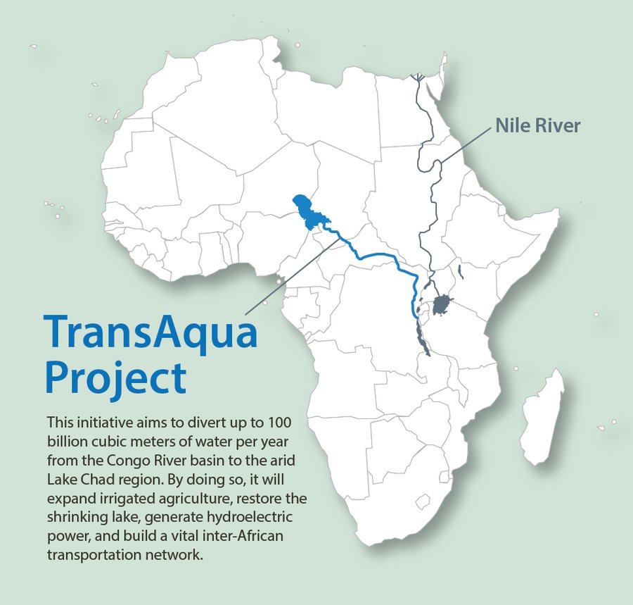
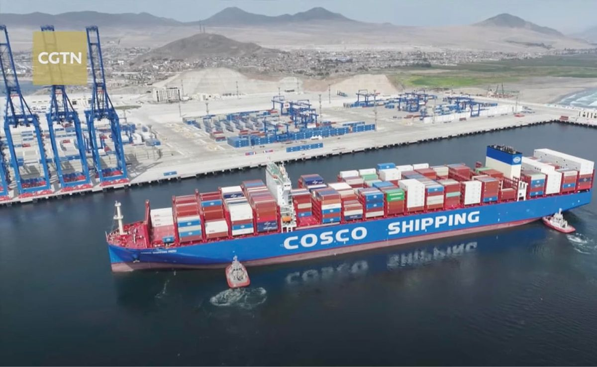
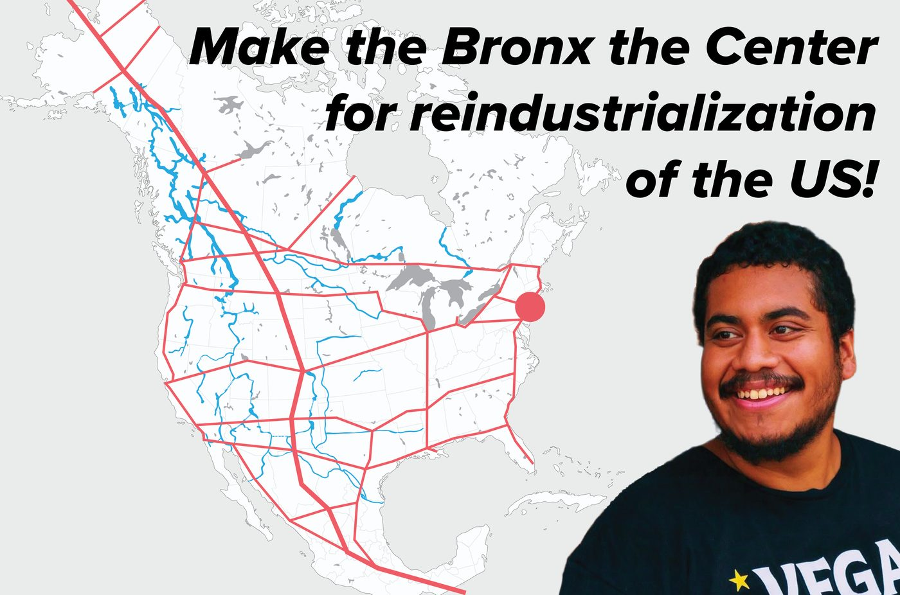

Schiller Instituttet
▾
International Ungdomsbevægelse: Forvandl verden med ideernes kraft
En verdensomspændende bevægelse af unge, der bygger civilisationens næste paradigme — fred gennem udvikling og menneskesindets skabende kræfter.
En verdensomspændende bevægelse af unge, der bygger civilisationens næste paradigme — fred gennem udvikling og menneskesindets skabende kræfter.
Historien er ikke noget, der sker for dig — det er noget, du selv skaber. Vi opfordrer ungdommen på alle kontinenter til at løfte blikket over dagens kriser og slutte sig til os i opbygningen af en verden af suveræne nationer, fælles udvikling og den menneskelige kreativitets ustoppelige kraft.
Uddrag af den tale, Lyndon H. LaRouche, Jr. holdt den 26. april 1997 på Schiller Instituttets konference »Fred gennem udvikling i Afrikas Store Søers region«, Walluf, Tyskland. Først offentliggjort i EIR, bind 24, nr. 22, 23. maj 1997.

Selvom jeg interesserer mig for mange af disse emner og er involveret i mange af de spørgsmål, der skal drøftes i dag, fandt jeg det mere passende at tage det ene emne op, som ingen andre ville tage op: situationen i verden, som definerer situationen i Afrika.
Nu beder jeg jer om et øjeblik at træde ud af det at være afrikanere og gå op på toppen af et bjerg, hvorfra I i det fjerne både kan se hele bredden af denne planets befolkning og også se ind i dens fortid, flere hundrede år tilbage. Og se på den situation, vi befinder os i; se ned på denne planet, som I tilfældigvis bor på, men bliv på bjergtoppen et stykke tid og spørg: Hvad foregår der i hele verden?
Lad os se på Afrika, dets udvikling og dets smerte i dag i lyset af, hvad der sker rundt om i verden. Og det, man ser, er, at denne planetariske civilisation er ved at gå i opløsning!
Vi står på randen af — ja, er faktisk midt i — det største finansielle sammenbrud globalt i hele menneskehedens historie. Vi er nået til det punkt, hvor pengesystemerne i alle lande, med Kina som mulig undtagelse, kan gå i opløsning en hvilken som helst morgen. Det vil sige, at vi kunne få en kædereaktion i den finansielle spekulation, som inden for 48 til 72 timer kan tilintetgøre enhver valuta og enhver bank på denne planet, simpelthen fordi alt fryser fast; penge kan ikke længere omsættes på grund af sammenbruddet. Det kan ske.


Foreslået af Schiller Instituttets grundlægger Helga Zepp-LaRouche den 30. november 2022. Klik på hvert princip for at læse det.

Fuld tekst: Ti principper — schillerinstitute.com ↗
Udtænkt af Lyndon og Helga LaRouche i begyndelsen af 1990'erne som en global politik for »fred gennem udvikling« — korridorer af jernbaner, vand og energi, der forener alle kontinenter. Klik på en pulserende markør for at udforske et udvalgt projekt.
 Klik på en markør for at udforske et projekt
Klik på en markør for at udforske et projekt
Kort (foreløbigt): Midtersiderne »Verdenslandbroen« — markørernes placering er et udkast.
Udvalgt projekt · Mellemøsten
Et halvtredsårigt udviklingsperspektiv for Palæstina og Israel, først foreslået af Lyndon LaRouche i 1975: fred bygget ikke på papirtraktater, men på den fysiske økonomi — vand, energi og transport til alle regionens folk.


Udvalgt projekt · Afrika
Det store projekt for at genopfylde Tchadsøen — at føre en lille del af vandet fra Congoflodens bassin nordpå gennem en ca. 2.400 km lang sejlbar kanal og bringe vand, energi og transport til Afrikas hjerte.

Udvalgt projekt · Sydamerika
⬡ Udkast — pamflettens dokument lader dette afsnit stå åbent; projekterne nedenfor er taget fra Verdenslandbro-kortet og kan udskiftes.
Sydamerikas dybeste havn, i Chancay i Peru, forbindes med en biokeanisk jernbanekorridor, der knytter Stillehavskysten til Brasiliens Atlanterhavskyst — og skærer op til en fjerdedel af sejltiden mellem Shanghai og Sydamerika og åbner kontinentets indre for udvikling.

Udvalgt projekt · Bronx, New York
⬡ Pladsholder — det udvalgte Bronx-projekt offentliggøres senere.
Verdenslandbroen handler ikke kun om fjerne kontinenter — den er en mission for ethvert lokalsamfund. Bronx-afsnittet vil vise ungdomsbevægelsens lokale organisering og et konkret udviklingsprojekt for New York, der forbinder kvarteret med verden.

En række videointerviews med repræsentanter for det globale Syd — statsmænd, videnskabsfolk og ungdomsledere — fra Schiller Instituttets YouTube-kanal.


Unge fra seks kontinenter mødtes online for at tage kampen op for et nyt paradigme. Se højdepunkterne, og tag så din plads i det, der kommer.
Den direkte vej ind: skriv din e-mail og dit telefonnummer, så kontakter en lokal organisator dig om at blive en del af den internationale ungdomsbevægelse.
Executive Intelligence Review — det ugentlige tidsskrift grundlagt af Lyndon LaRouche. Tegn et abonnement og studér idéerne bag bevægelsen.
Abonnér
Aftal et introducerende Zoom-møde med koordinatorerne for den internationale ungdomsbevægelse — henvend dig til koordinatoren for dit sprog.
Repræsentant for Schiller Instituttet · International ungdomskoordinator
Se LinkedIn-profilRepræsentant for Schiller Instituttet · International ungdomskoordinator
Se LinkedIn-profilRepræsentant for Schiller Instituttet · International ungdomskoordinator
Se LinkedIn-profil